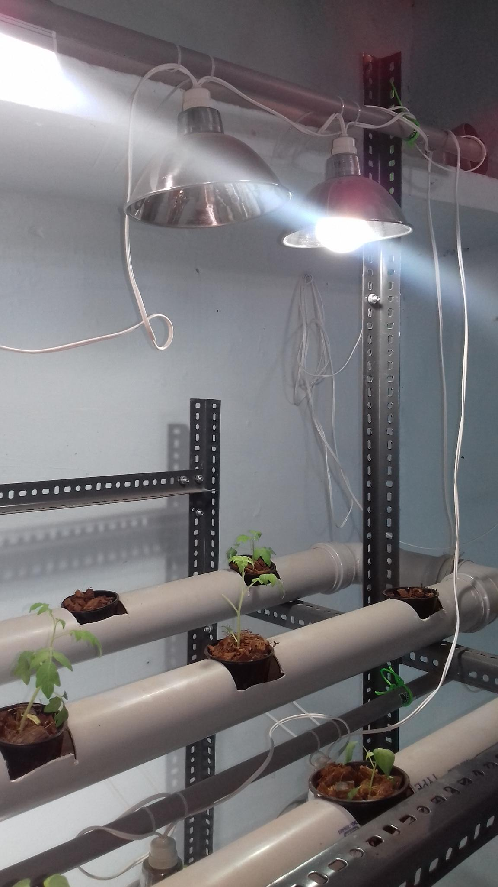

How to Create a DIY Hydroponic System for Growing Herbs in a Small Apartment
By: Zoe
Introduction
Design Your Own Hydroponics Setup for a Lavish Herb Garden in Your Apartment
Are you living in the city and craving fresh herbs from your garden? Creating a hydroponic system is a great solution for apartment dwellers looking to bring the outdoors inside. Hydroponics is a form of gardening that uses water to grow plants, rather than soil. DIY hydroponic systems are perfect for small apartments and have many benefits, including a higher yield and faster growth compared to traditional gardening.
To start your hydroponic garden, decide on your hydroponic setup. There are many forms of DIY hydroponic systems that can be made with simple materials from your local hardware store. From mason jars to PVC pipes, choosing the right hydroponic system depends on the space you have available and how much time, money, and effort you’re willing to put in.
Once you’ve determined your setup, the next step is to choose the herbs you want to grow. Popular herbs for hydroponics are basil, parsley, cilantro, and mint, among others. When choosing your herbs, make sure they can thrive in a hydroponic environment.
After deciding on your setup and herbs, assemble your hydroponic system and add nutrients to the water. Hydroponic systems provide plants with all the necessary nutrients in the water, eliminating the need for soil. With this method, plants grow faster, larger, and healthier than traditional soil-grown plants.
In conclusion, hydroponics is a great way to grow fresh herbs in your apartment at any time of year. With a little creativity and effort, you can create an indoor hydroponic system that will produce delicious and nutritious herbs. Start your hydroponic journey today and elevate your apartment garden game!
Benefits of Hydroponic Gardening
Are you interested in growing your own herbs but don't have access to an outdoor garden space? Fear not, because a DIY hydroponic system may be the solution you've been searching for! Hydroponic gardening is a soil-less method of growing plants in nutrient-rich water, making it a perfect solution for small apartment dwellers. In this article, we'll explore the benefits of hydroponic gardening and how you can create your own DIY hydroponic system for growing herbs in your small apartment.
First and foremost, hydroponic gardening allows you to grow fresh herbs that are free from harmful pesticides and chemicals. By controlling the nutrient and water levels, you can ensure that your herbs are getting the optimal amount of nutrients needed for healthy growth. Additionally, hydroponic gardening saves water as it recirculates the water through the system, making it a more sustainable option than conventional gardening methods.
Another benefit of hydroponic gardening is that it maximizes space utilization. Traditional gardening requires a significant amount of space, but with a hydroponic system, you can grow plants vertically or in tight spaces. This makes it ideal for apartment dwellers who want to grow their own fresh herbs but have limited space.
Creating a DIY hydroponic system is easier than you may think, and can be done using materials that are readily available at a hardware or gardening store. By following a few simple steps, you can have a thriving herb garden right in your own apartment!
In conclusion, hydroponic gardening provides numerous benefits, from growing fresh, pesticide-free herbs to conserving water and maximizing space utilization. With a DIY hydroponic system, you can easily grow your own herbs in your small apartment and enjoy the many benefits of hydroponic gardening. So why not give it a try today and start enjoying fresh herbs all year round!
Choosing the Right System
When it comes to growing herbs in small apartments, hydroponic systems are the way to go. They are an efficient and easy way to garden, especially when space is limited. However, choosing the right system can be difficult for first-timers. There are various types of hydroponic systems, each with its own benefits and drawbacks. This guide aims to help you pick the best hydroponic system for your small apartment.
Determine Your Space and Budget
The first thing to consider is your available space and budget. While hydroponic systems are often less expensive than traditional gardening, they still come with a price tag. Depending on the type of system you select, setup costs can range from a few hundred to a few thousand dollars. It’s important to choose a system that won't cost more than you can afford and can comfortably fit in your space.
Types of Hydroponic Systems
Next, let’s look at the different hydroponic systems available to you.
1. Deep Water Culture (DWC) Systems
DWC systems are one of the simplest and most popular hydroponic systems. They involve placing the plant roots in a nutrient-rich water solution. This method provides high levels of oxygen to the roots and helps plants grow quickly.
2. Drip Irrigation Systems
Drip irrigation systems use a timer to release nutrient solution into the base of the plant. The system recirculates excess fluid back to the reservoir, making it a low-maintenance option.
3. Nutrient Film Technique (NFT) Systems
NFT systems use a thin layer of nutrient solution to flow over the plant roots. This system requires less water and uses a small pump to circulate the water through the system.
4. Aeroponic Systems
Aeroponic systems involve suspending plant roots in the air and misting them with nutrient-rich water. This system requires a bit more attention and maintenance, but has higher yields.
Conclusion
Once you’ve determined your space, budget, and system type, you can select the one that suits your needs. By following these guidelines, you’ll be on your way to creating your own thriving hydroponic herb garden in your small apartment.
Materials Needed
One of the most popular ways to grow herbs indoors, especially in small apartments, is through the use of hydroponic systems. The upside to hydroponics is that you don't need a lot of space, soil, or even sunlight to have a thriving herb garden in your home. To get started on this exciting method of growing plants, you'll need a few key materials.
Here is a comprehensive list of all the things you'll need to begin building your very own hydroponic herb garden:
1. Container: You'll need a container to hold the plants, and this can vary depending on your preference. You can use anything from a bucket to a bin to even a repurposed plastic container from the store. The most important thing is that it holds enough water and has a solid base to stand on.
2. Growing Medium: This is what the plants will sit in to receive nutrients and support their growth. Many hydroponic growers use a mixture of clay pebbles and perlite or rock wool cubes, but you could also use coconut coir or even just water if you're starting with seeds.
3. Nutrient Solution: Plants grown hydroponically need a nutrient-rich water solution to grow. There are many pre-made nutrient solutions available on the market, or you could make your own using a recipe specifically designed for hydroponics.
4. Grow Lights: Since hydroponic systems don't rely on natural sunlight, you'll need to invest in some type of grow light to provide the plants with the light they need to grow. Fluorescent lights or LED lights are the most popular choices for indoor hydroponics.
5. pH Test Kit: Finally, since hydroponic plants are grown in a water solution, it's important to maintain the correct pH balance to ensure their optimal growth. A pH test kit will help you keep a close eye on the solution's pH level, and many hydroponic growers recommend keeping it around 6-6.5 for herbs.
With these essential materials, you're on your way to creating a thriving hydroponic herb garden in your small apartment. Whether you're growing basil, cilantro, or parsley, the benefits of growing your own herbs are immeasurable - from saving money to enjoying fresh and organic ingredients, without ever having to leave your home.
Building the System
Building the System: A Step-by-Step Guide to Creating a DIY Hydroponic System
Are you tired of buying expensive herbs at the store that only last a few days? Do you want to grow your own fresh herbs without having a green thumb or even outdoor space? Then a DIY hydroponic system may be the perfect solution for you!
Hydroponics, the art of growing plants without soil, has been gaining popularity for its ability to provide fresh produce year-round, while using less water and space than traditional gardening methods. And the best part is, you can create your own DIY hydroponic system at home with simple tools and affordable materials.
Building the System: A Step-by-Step Guide to Creating a DIY Hydroponic System is your go-to resource to get started. We've researched, tested, and compiled the best practices to help you create your very own hydroponic herb garden in a small apartment.
Our guide takes you through each step of the process, from building the container to selecting the right lighting and nutrients. We've included detailed instructions, a list of materials, and tips to ensure your hydroponic system is successful.
Not only will you be able to grow your own herbs, but you'll also learn about the science behind hydroponics and how to maintain a healthy system. Plus, it's a fun and rewarding hobby that you can enjoy with friends and family.
With Building the System: A Step-by-Step Guide to Creating a DIY Hydroponic System, you'll have all the knowledge and tools you need to start growing fresh herbs in your own home. Get ready to enjoy the taste of homegrown, pesticide-free herbs and the satisfaction of growing your own produce.
Planting and Care
for Your Hydroponic Herb Garden
Gardening has always been a popular hobby, but not everyone has the luxury of having a backyard or a community garden to tend to. That shouldn't stop you from nurturing a green thumb, especially when you live in a small apartment. Enter, the DIY hydroponic system. Using water, nutrients, and a growing medium, hydroponic systems allow for the growth of plants without soil, saving space and water.
This subheading focuses on the planting and care of your hydroponic herb garden. Once you've set up your hydroponic system, it's time to plant and care for your herbs. But how do you make sure they grow strong and healthy?
First, choose the right herbs for your hydroponic system. Herbs that grow well in hydroponic systems include basil, mint, cilantro, parsley, and chives. Ensure that the herbs get the right amount of light, which can be adjusted by moving the plants closer or farther from the light source. Light is essential for photosynthesis, so plants need at least 12 to 16 hours of light per day.
Monitoring the pH level of the water is also crucial. The pH level controls the nutrient uptake and affects the growth and quality of the plant. Make sure to keep the pH level between 5.5 to 6.5 for optimal growth.
Water quality is another important factor to consider. Tap water contains chlorine and other chemicals that can harm the plants. Consider using filtered water or letting the water sit out overnight to allow the chlorine to dissipate.
Finally, it's necessary to fertilize your plants adequately. Hydroponic systems require the right amount of nutrients to grow properly. Use a high-quality hydroponic nutrient solution that contains all the macronutrients (nitrogen, phosphorus, and potassium) and micronutrients (calcium, magnesium, and sulfur) that the plants need.
In conclusion, creating a hydroponic system for growing herbs is an excellent way to bring some greenery into your small apartment. By following these vital planting and care tips, you can grow beautiful and healthy herbs for all your culinary needs.
Harvesting and Using Your Herbs
As you dive into the world of hydroponic gardening, you'll quickly realize that the possibilities are endless. One of the biggest rewards comes from harvesting and using the herbs you've grown from scratch. Not only do you get to enjoy the freshest and most flavorful herbs possible, but you'll also save money on grocery store prices and eliminate waste and packaging.
Before you start snipping away at your plants, it's essential to understand the best practices for harvesting herbs. The timing and techniques differ depending on the type of herb you're growing, so take some time to research the specifics of each one. Generally, the best time to harvest is in the morning, after the dew has dried and before the sun gets too hot. This will help preserve the flavor and nutrients in the leaves.
To avoid damaging your plants, use sharp pruning shears to cleanly cut the stems at a 45-degree angle. Try to take no more than a third of the plant at one time, and always leave at least two sets of leaves on the stem to encourage new growth.
Once you've harvested your herbs, the possibilities are endless. You can use them fresh in salads, marinades, and cocktails, or dry them for use in teas, spice blends, and baked goods. Store them in an airtight container in a cool, dry place, and label them with the date and type of herb for easy identification.
By creating a DIY hydroponic system for growing herbs in a small apartment, you're not only setting yourself up for success but also for culinary creativity. Don't be afraid to experiment with different flavors and pairings—You never know what delicious new recipe you might create. Happy harvesting!
Troubleshooting Common Issues
Are you tired of having no space to plant your own herbs? Do you want to save money and grow your own fresh herbs year-round? A DIY hydroponic system might be the solution for you! By following a few simple steps, you can create a hydroponic system for growing herbs right in your small apartment.
While there are many benefits to hydroponic gardening, there are a few common issues that can arise. Fortunately, with a little troubleshooting, you can easily overcome these obstacles and ensure that your herbs thrive.
One of the most common issues in hydroponic gardening is nutrient deficiency. When plants don't receive enough nutrients, they may become stunted or discolored. To prevent this, make sure that your nutrient solution is properly mixed and that you're using the right amount of nutrients for your plants. Additionally, be sure to change your nutrient solution regularly to avoid buildup of salts and mineral deposits.
Another issue that can arise in hydroponic gardening is pH imbalance. pH levels that are too high or too low can cause nutrient lockout, preventing plants from absorbing the nutrients they need. To fix this issue, regularly test the pH of your nutrient solution and make adjustments as needed.
Plant diseases and pests can also be a challenge in hydroponic gardening. Without soil to provide natural defenses, plants can be more vulnerable to infections and infestations. To prevent these issues, make sure to keep your hydroponic system clean and free of debris, and regularly inspect your plants for signs of damage or disease.
With a little bit of troubleshooting, you can successfully grow fresh and flavorful herbs in your small apartment. Not only will you save money and reduce waste, but you'll also enjoy the satisfaction of growing your own food. Let's get started on creating your own DIY hydroponic system today!
Tips for Success
Creating a DIY hydroponic system for growing herbs in a small apartment is a great way to have fresh, healthy produce at the tip of your fingertips. With the right tools and knowledge, anyone can grow herbs indoors using hydroponics, regardless of the available space. One of the most significant advantages of hydroponics is that it requires minimal space, making it perfect for apartment dwellers, for those who don't have access to outdoor spaces or those who simply enjoy growing herbs indoors.
To ensure that your DIY hydroponic system is successful, there are a few essential tips to keep in mind. Firstly, you must determine the best location for your hydroponic system. Herbs require a lot of light, so be sure to choose a spot in your apartment that receives ample sunlight throughout the day. Supplemental lighting, such as a grow light, can also be used to ensure your plants get enough light.
Another critical aspect of growing herbs using hydroponics is choosing the proper growing medium. The growing medium is the material used instead of soil to support the plants' roots. Options for growing mediums include coconut coir, rockwool, and perlite. Each of these mediums has its unique properties that make them ideal for growing different types of herbs.
Monitoring your hydroponic system is also essential to ensure your plants thrive. This includes monitoring the water and nutrient levels, pH levels, and temperature of the system. By closely observing and controlling these factors, you can ensure your plants receive the optimal growing conditions they need to thrive.
In conclusion, creating a DIY hydroponic system for growing herbs in a small apartment is an excellent way to have fresh, healthy produce at your fingertips. By following the tips discussed above, you can ensure your hydroponic system is successful and provide yourself with a steady supply of fresh herbs all year round!
Conclusion
After all the research, planning, and constructing, you may be wondering if creating a DIY hydroponic system is really worth it. The short answer is yes, absolutely! Not only will you have access to fresh, flavorful herbs and vegetables all year-round, but you'll also be reducing your overall carbon footprint by growing your produce at home.
By creating a hydroponic system for your small apartment, you'll be able to save money on groceries and minimize food waste as you'll only harvest what you need. Additionally, hydroponic systems use significantly less water than traditional growing methods, making them an environmentally-friendly option.
But the benefits don't stop there. Studies have shown that gardening, whether indoor or outdoor, can help reduce stress levels and improve overall mental health. The act of caring for plants and watching them grow can be incredibly therapeutic and rewarding.
Not only will you be improving your own well-being, but creating a DIY hydroponic system can also be a fun and educational activity for the whole family. You'll be able to teach children about plant growth, sustainability, and healthy eating habits.
In conclusion, creating a DIY hydroponic system for growing herbs in your small apartment is not only a practical and cost-effective solution but also a way to reduce your environmental impact and improve your overall well-being. Plus, the feeling of satisfaction from growing your own fresh herbs is unmatched. So don't wait, start your hydroponic garden today!